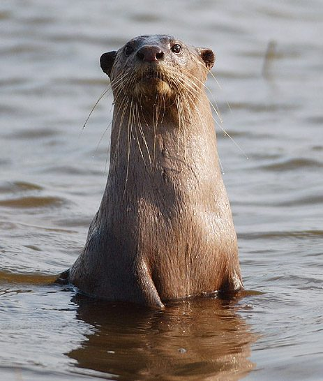

ऊदबिलावSmooth-coated Otter
Lutrogale perspicillata · Mustelidae · MAM-0025

- Scientific name
- Lutrogale perspicillata (Geoffroy Saint-Hilaire, 1826)
- Family
- Mustelidae
- Hindi
- ऊदबिलाव
- Local names
- ud, udbilaw, ud-prani, river otter
- Status here
- native
- IUCN
- VU
- Review
- audited and independently read
When to look कब देखें
Present all year.
ऊदबिलाव / Smooth-coated Otter
Lutrogale perspicillata (Geoffroy Saint-Hilaire, 1826) — Mustelidae
ऊदबिलाव — भारतीय नदियों के सबसे मुलायम-कोट वाला शिकारी, जो केवल और केवल घाघरा और गिरवा नदियों में बचा रहता है, और उन भी सबसे गहरे हिस्सों में। यह नहीं होता सांपों की तरह अकेला शिकारी; 6-10 की टोली में शिकार करता है, नदी में हर दिशा से मछलियों को घेरता है। इसका शरीर लंबा, पतला, लचकदार, और गहरे चॉकलेट-भूरे रंग का। इसके पंजे तरैक बने होते हैं, और नाक की छीद पानी में बंद हो जाती है। नाम 'ऊद' या 'उद्' संस्कृत 'उद्रः' से आता है। वन्यजीव संरक्षण अधिनियम 1972 की अनुसूची I में पूरी तरह सुरक्षित है, पर विलुप्त हो रहा है। घाघरा-कटर्निहाट क्षेत्र इस जानवर के लिए एक महत्वपूर्ण आश्रय क्षेत्र है।
Quick Identification त्वरित पहचान
| Feature | Description |
|---|---|
| Size | Body length 60–80 cm; tail 35–45 cm; weight 7–11 kg |
| Fur | Dense, glossy, dark brown to chocolate brown; exceptionally fine and water-resistant |
| Head & snout | Small, flattened head; snout blunt with powerful jaw muscles |
| Eyes | Medium-sized, black; positioned forward-facing for stereoscopic vision |
| Ears | Small, rounded, with valves that close when diving |
| Limbs | Short, powerful; feet webbed for swimming |
| Tail | Long, thick, muscular; flattened laterally; used for aquatic propulsion |
| Social | Found in groups of 6–10 individuals; cooperative hunting |
| Geographic range | Only in Ghaghra and Girwa river systems; Vulnerable; indicator of river health |
Field tip: A dark brown, sleek carnivore in river channels, often seen in groups diving and swimming. The dense, smooth fur and aquatic adaptations distinguish it from other mammals. Observe from a distance; the group may flee rapidly when disturbed.
हिंदी — कैसे पहचानें: गहरे भूरे रंग का, लंबा, पतला, पानी में तेज़। अकेला नहीं, 6-10 की टोली। मुलायम-कोट, नदी का शिकारी। ख़तरनाक नहीं, पर बिल्कुल सुरक्षित।
Morphology आकारिकी
Biometrics (typical measurements for Indian populations):
| Measurement | Range |
|---|---|
| Head-body length | 60–80 cm |
| Tail length | 35–45 cm |
| Height at shoulder | 25–30 cm |
| Weight | 7–11 kg |
Body: Elongated and muscular, adapted for aquatic locomotion. The body is laterally compressed (flattened side-to-side) to reduce drag. The spine is highly flexible, allowing for sinuous swimming motion.
Fur: Exceptionally dense and glossy, with two layers: a short, dense underfur insulating against cold water, and longer guard hairs providing water resistance. The fur is dark brown to chocolate brown, nearly black in some individuals. The ventral surface is slightly paler. The fur is among the finest in any mammal and was historically hunted for its value.
Head: Flattened and somewhat trapezoidal in shape when viewed from above. The snout is blunt and powerful, armed with strong jaw muscles and sharp teeth. Vibrissae (whiskers) are highly sensitive, allowing detection of fish vibrations underwater.
Limbs: Shorter than terrestrial carnivores but powerful. The feet are fully webbed, with the interdigital membrane extending beyond the claw tips. The tail is muscular, flattened laterally, and serves as a rudder in water.
Sensory adaptations: Eyes are large and positioned forward for binocular vision. Ears are small but functional; special valves close the ear canal when diving. Nasal valves also close, preventing water entry.
Sexual dimorphism: Males are slightly larger and heavier than females.
Behaviour & Ecology व्यवहार और पारिस्थितिकी
Cooperative forager. Unlike most carnivores, the smooth-coated otter hunts in groups, coordinating movements to encircle and corral fish. A group of 8–10 individuals can drive fish into shallow areas where capture is easy. This social hunting strategy is unique among Indian mustelids.
Piscivore specialist. Feeds almost exclusively on fish, with a preference for medium-sized species (100–200 g). Can consume 15–20% of its body weight in fish daily.
Social structure. Forms stable family groups that may persist for years. Groups consist of a breeding pair and offspring of various ages. Individuals maintain strong social bonds through grooming, play, and cooperative hunting.
Denning. Rests in burrows along river banks, often enlarging or modifying old porcupine or monitor lizard burrows. Multiple den sites may be used within a home range.
Marking behavior. Uses latrines (areas where feces are deposited) to mark territory. These latrines accumulate distinctive feces and are revisited regularly.
Life Cycle / Phenology जीवन चक्र
| Stage / season | Event |
|---|---|
| Year-round | Social groups remain stable; cooperative hunting |
| December–April | Peak breeding season; longer day length triggers breeding |
| Gestation | 60–65 days |
| Litter size | 1–4 pups (typically 2–3) |
| Pup emergence | 2–3 months old; begin learning to swim |
| Weaning | 4–5 months old; learning to hunt with group |
| 2–3 years | Sexual maturity; may remain in natal group or disperse |
| Lifespan | 15–20 years in wild; longer in captivity |
Host Plants or Prey आहार
Primary diet:
- River Snail — snails (crushed in molars)
- Fish, especially catfish, carp, and medium-sized cyprinids
- Crustaceans and freshwater molluscs
- Occasionally frogs, small turtles
Hunting technique: Pursues fish underwater with rapid swimming; herds fish into shallow areas; kills with powerful bite to the head or back.
Predators / Natural Enemies शत्रु
Adults: Few natural predators due to large group size and aquatic habitat.
Pups and young otters:
- Jackals and feral dogs (at dens)
- Monitor lizards
- Large crocodiles (Gharial, Mugger)
- Raptors (large eagles)
Human persecution: Historically hunted for fur; currently threatened by habitat loss, river damming, water pollution, and incidental capture in fishing nets.
Agricultural / Human Relevance कृषि प्रासंगिकता
Conservation status. The smooth-coated otter is listed as Vulnerable by the IUCN and protected under Schedule I of the Wildlife Protection Act, 1972 — the highest protection level. Historically found throughout the river systems of the Indian subcontinent, its range has contracted severely due to habitat loss and human persecution.
Fisheries conflict. In areas where otters occur near fish farms or important fisheries, they are perceived as competitors and are illegally killed. However, the otter's consumption of fish is negligible compared to commercial fishing.
Habitat requirement. Requires perennial river systems with clean water, adequate fish populations, suitable denning habitat, and minimal human disturbance. Dam construction, water abstraction, and pollution degrade habitat quality.
Conservation efforts. Protected reserves and sanctuary designation have helped in some areas. The Katarniaghat Wildlife Sanctuary and Ghaghra-Girwa stretch are designated as critical otter habitat. Captive breeding programs exist in a few zoos for potential reintroduction.
Cultural significance. The otter is known in Hindu and Buddhist traditions. Some communities regard it with reverence; others with suspicion.
Today. Smooth-coated otter populations persist in fragmented river stretches, with the Ghaghra–Girwa system and Chambal river holding the largest concentrations. The nearest population to Basti district is in the Ghaghra and Girwa river systems, where conservation efforts are ongoing.
Expected Locally स्थानीय रूप से अपेक्षित
Not a field record. Written from published accounts for eastern Uttar Pradesh. No confirmed local sighting yet — if you have seen it, that is what the atlas needs.
अभी तक स्थानीय पुष्टि नहीं। यह विवरण प्रकाशित स्रोतों से है, किसी अवलोकन से नहीं।
Range-restricted: The smooth-coated otter is expected only and exclusively in the Ghaghra and Girwa river systems that border Basti and Ayodhya districts. They are found in deep river channels and pools where fish are abundant and human disturbance is minimal. The species avoids shallow, turbid, or polluted water. Sightings are rare and noteworthy; if you observe otters, this is exactly what the atlas needs. A first local record should include place name, GPS coordinates, date, time of day, group size, and behavior (hunting, resting, playing).
Distribution वितरण
Global range: South and Southeast Asia — India, Bangladesh, Nepal, Bhutan, Thailand, Laos, Vietnam, Cambodia, Myanmar. Disjunct populations in some areas.
In India: Fragmented populations in river systems across the country. Major populations persist in the Ghaghra, Chambal, and a few other protected rivers.
In Uttar Pradesh: Restricted to the Ghaghra and Girwa river systems and a few tributaries; historically more widespread.
In Basti district / eastern UP: Restricted to the Ghaghra and Girwa rivers; rare and localized, with no recent confirmed records.
Research Questions शोध प्रश्न
Anyone can investigate these | कोई भी इन प्रश्नों की जाँच कर सकता है
- How many smooth-coated otters occur in a given 10-km stretch of the Ghaghra during different seasons? — Survey in dry and monsoon seasons.
- What fish species comprise the bulk of otter diet in local river systems? — Examine feces at latrines for fish remains.
- How large are family groups in the Ghaghra, and do group sizes vary seasonally? — Monitor group composition over time.
- What river habitat characteristics (pool depth, flow rate, fish density) are associated with otter presence? — Map habitat use.
- Are otter populations increasing, stable, or declining in the Ghaghra–Girwa stretch? — Long-term monitoring.
Similar Species मिलती-जुलती प्रजातियाँ
| Species | How to tell apart | हिंदी |
|---|---|---|
| Clawless Otter (Aonyx cinerea) — if present | Smaller (40–50 cm), webbing does not extend beyond claws, different habitat (small streams vs. rivers) | छोटा, पंजे अलग |
| Water-shrew (Neomys) — if present | Much smaller (15 cm), pointed snout, different behavior | बहुत छोटा, नुकीली नाक |
| Beaver (Castor fiber) — historically present | Larger rodent, flat tail, different teeth and diet | बहुत बड़ा कृतक, चपटी पूँछ |
Field rule: A dark brown, sleek carnivore in river groups (6–10 individuals) diving and swimming, with a muscular laterally-flattened tail, is a smooth-coated otter. It is protected, indicator of river health, and extremely rare. Report any sighting to the atlas.
Taxonomy & Classification वर्गीकरण
Original description. Described by Isidore Geoffroy Saint-Hilaire in 1826 in Cours de l'Histoire Naturelle. The genus Lutrogale is monotypic (contains only this species).
Subspecies. Lutrogale perspicillata perspicillata — the nominate subspecies found in South Asia. A Southeast Asian subspecies L. p. maxwellii occurs in Thailand and Myanmar.
Family and order placement. Mustelidae, the weasels, martens, badgers, and otters; order Carnivora.
Phylogenetic notes. Lutrogale is a specialized aquatic mustelid that diverged early from other otter lineages. Its cooperative hunting behavior is unique among mustelids and suggests high sociality.
IUCN status rationale. Vulnerable due to severe habitat loss (river damming, water extraction, pollution), illegal hunting, incidental capture in fishing nets, and reduced fish availability. Population declines have been significant across the historical range. Some river stretches show population recovery due to conservation efforts.
Photo Gallery फोटो गैलरी
Photos needed आवश्यक फोटो
- [ ] Smooth-coated otter swimming or diving in river (नदी में तैरता हुआ)
- [ ] Otter group resting on river bank (नदी के किनारे समूह)
- [ ] Head detail showing whiskers and eyes (सिर और आँखें)
No photos yet — add field photos to media/species/smooth_coated_otter/ and run node scripts/sync_photos.js.
Atlas Connections संबंधित प्रजातियाँ
- Gharial — shares the same river habitat
- Mugger — shares the same river habitat
- River Snail — part of the river ecosystem food web
References संदर्भ
- Geoffroy Saint-Hilaire, I. (1826). Cours de l'Histoire Naturelle. Paris.
- Prater, S.H. (1971). The Book of Indian Animals. Oxford University Press, Bombay.
- Reuther, C., Herrmann, M., & Dolch, D. (2000). Catching-up with the Otter - A Review of the distribution of the smooth-coated otter (Lutrogale perspicillata) in Asia. Habitat 11.
- Canid, Pangolin, and Global Tree Specialist Groups (2015). Lutrogale perspicillata — IUCN Red List. https://www.iucnredlist.org
- Hussain, S.A. & Cormier, M.J. (1993). Conservation of the smooth-coated otter Lutrogale perspicillata in Bangladesh and India. Oryx, 27(1): 49–56.
- GBIF Occurrence Data — Lutrogale perspicillata, India (2026).
Source file: species/fauna/mammals/smooth_coated_otter.md